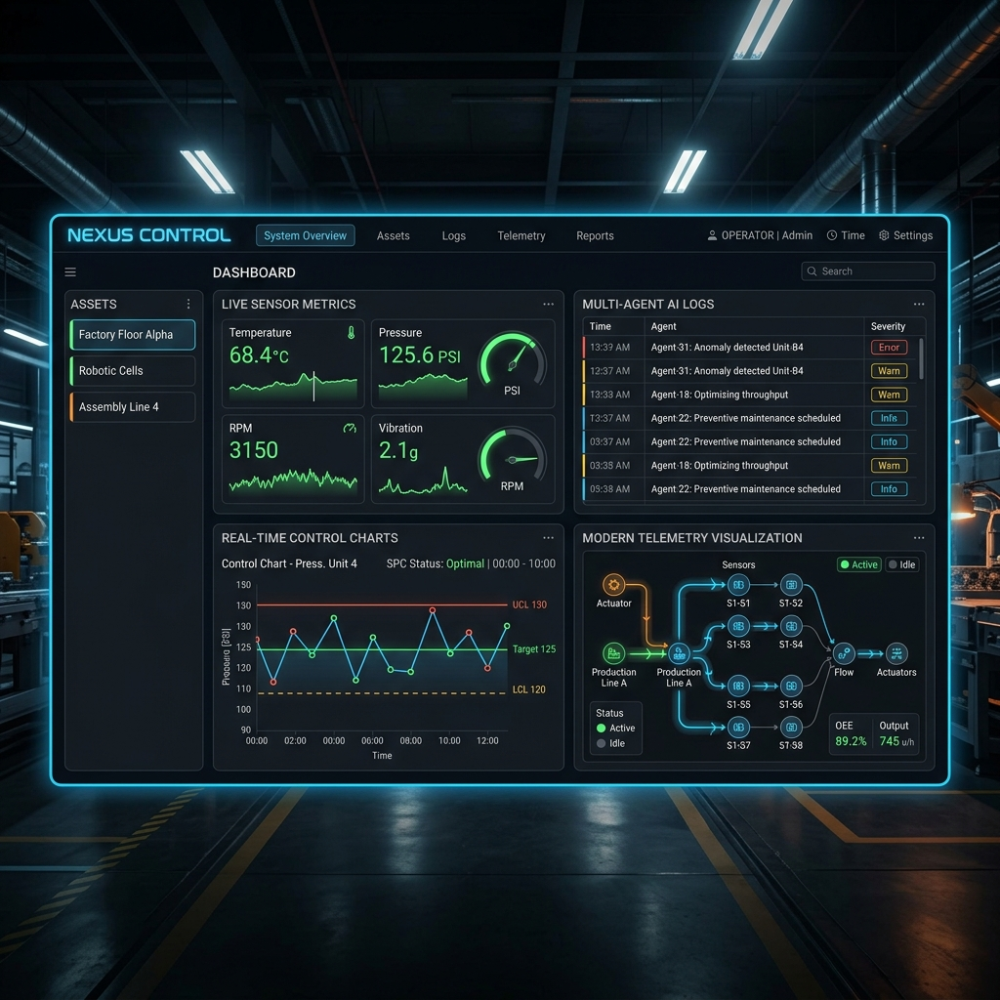

NEXUS CONTROL
Engenharia AI📌 Problema: Monitoramento e programação de CLP de forma manual e inflexível em chão de fábrica.
⚙️ Solução: Criação de uma plataforma Multi-Agent local que gera códigos Ladder/Structured Text e renderiza interfaces SCADA via linguagem natural.
📊 Resultado: Redução drástica no tempo de programação de rotinas industriais operando 100% offline (segurança de dados).
PythonOllamaFlaskReact
Ver Repositório